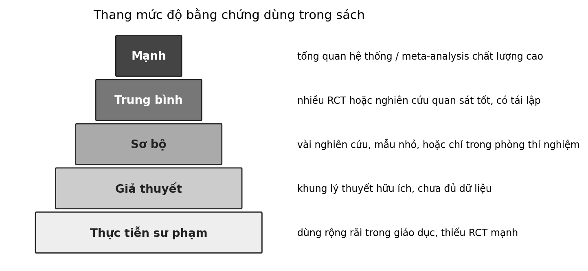

6 Âm nhạc và kỹ năng đọc
Một cô giáo lớp Một cho cả lớp vỗ tay theo từng âm tiết của một câu đồng dao. Một em vỗ đều, đúng nhịp, mặt rạng rỡ. Rồi cô đọc chậm một từ và nhờ các em tách nó thành những âm nhỏ hơn. Em ấy khựng lại, nhìn bạn bên cạnh. Cùng một em, một việc rất giỏi và một việc rất khó. Điều đó nói lên điều gì về mối liên hệ giữa nhịp điệu và việc học đọc?
Câu hỏi trung tâm
Nhịp điệu hỗ trợ nhận thức âm vị và việc đọc tới mức nào, và vì sao không thể nói rằng âm nhạc chữa được chứng khó đọc? Chương này có một bức tranh khá rõ ở phần cơ chế, một bức tranh đáng lưu ý nhưng còn chưa đầy đủ ở phần can thiệp, và một bức tranh gần như trống ở phần tiếng Việt, điều chúng ta sẽ nói thẳng.
Ba thuật ngữ nền
Nhận thức âm vị (phonological awareness) là khả năng nhận ra và thao tác với các đơn vị âm thanh của lời nói, như âm tiết, vần và từng âm. Chứng khó đọc phát triển (dyslexia) là khó khăn kéo dài trong việc đọc từ chính xác và trôi chảy mà không do thiếu cơ hội học hay do trí tuệ thấp; một tổng quan về chứng này mô tả khiếm khuyết về xử lý âm vị là một yếu tố cốt lõi thường gặp Sơ bộ (Peterson & Pennington, 2012). Chữ viết trong sáng (transparent orthography) là hệ chữ mà mối quan hệ giữa âm và chữ khá nhất quán; chữ quốc ngữ của tiếng Việt thường được xếp vào loại này, và chúng ta sẽ thấy vì sao điều đó quan trọng.
Cách đọc chương này
Đây là chương cần thận trọng nhất về một nhóm người: trẻ đang gặp khó khăn khi học đọc và gia đình các em. Một câu như “nhạc giúp trẻ đọc tốt hơn” nghe nhẹ nhàng, nhưng nếu hiểu sai nó có thể làm lỡ việc hỗ trợ chuyên môn đúng lúc. Vì vậy mỗi phát biểu sẽ được tách ra: nó nói về cơ chế hay về can thiệp, về trẻ phát triển bình thường hay trẻ khó đọc, về ngôn ngữ nào.
Chương đi theo sáu bước: nhận thức âm vị và việc học đọc, khung lấy mẫu thời gian, bằng chứng can thiệp, lý do không thể nói âm nhạc chữa chứng khó đọc, những gì chúng ta biết về tiếng Việt, và một hoạt động gõ phách theo âm tiết. Ở mỗi bước, chúng ta sẽ nói rõ bằng chứng đến từ trẻ nào và ngôn ngữ nào.
1. Nhận thức âm vị và việc học đọc
Học đọc trước hết là học nối chữ với âm. Một tổng hợp phân tích các nghiên cứu về kỹ năng âm vị và việc học đọc cho thấy khả năng nhận thức âm vị liên quan chặt chẽ với sự phát triển đọc của trẻ, và đây là một trong những mối liên hệ được xác lập tốt nhất trong nghiên cứu về đọc Trung bình (Melby-Lervåg và c.s., 2012). Điều này giải thích vì sao nhiều can thiệp học đọc tập trung vào việc giúp trẻ nghe và thao tác với các đơn vị âm thanh.
Cần nhớ rằng đọc không chỉ là giải mã. Đọc hiểu đòi hỏi cả khả năng chuyển chữ thành âm và khả năng hiểu ngôn ngữ, và dữ liệu về tiếng Việt ở đoạn sau cho thấy hai phần ấy đóng góp khác nhau theo giai đoạn. Một bài hát hay một trò chơi nhịp, nếu có ích, chủ yếu chạm vào phần thứ nhất ở những năm đầu. Phần thứ hai, vốn từ và hiểu biết về thế giới, được nuôi bằng đọc cho trẻ nghe, trò chuyện và đọc sách.
Nhưng mối liên hệ không giống nhau ở mọi ngôn ngữ. Một nghiên cứu theo dõi hơn một nghìn trẻ học một trong năm hệ chữ cái, gồm tiếng Anh, Pháp, Đức, Hà Lan và Hy Lạp, cho thấy tốc độ gọi tên nhanh (RAN) dự đoán độ trôi chảy khi đọc ở mọi hệ chữ, còn mối quan hệ giữa nhận thức âm vị và đọc thì phức tạp hơn và phụ thuộc vào đặc điểm nhiệm vụ, giai đoạn phát triển và độ phức tạp của hệ chữ Sơ bộ (Landerl và c.s., 2019). Nói cách khác, nhận thức âm vị quan trọng, nhưng vai trò chính xác của nó thay đổi theo hệ chữ.
Với tiếng Việt, chúng ta có một nghiên cứu đáng quý nhưng đơn lẻ. Nghiên cứu theo dõi 82 trẻ ở Hà Nội từ mẫu giáo đến hết lớp Một, và các tác giả mô tả tiếng Việt là một hệ chữ trong sáng gồm chữ cái La-tinh và dấu phụ. Họ thấy nhận thức âm vị ở mẫu giáo dự đoán khả năng giải mã ở lớp Một, mạnh hơn tốc độ gọi tên (khoảng 10% so với 4% phương sai riêng); còn dự đoán tốt nhất cho đọc hiểu ở lớp Một là khả năng giải mã cùng năm (47%) và vốn từ vựng diễn đạt ở mẫu giáo (4%). Trẻ trở nên giải mã chính xác và hiệu quả sau một năm học Sơ bộ (Pham & Snow, 2021). Có hai điểm cần nhớ: đây là nghiên cứu quan sát ở một thành phố, không phải thử nghiệm can thiệp; và nó không nói gì về âm nhạc.
Điều này gợi ý một kỳ vọng cân nhắc. Ở một hệ chữ trong sáng như tiếng Việt, khi trẻ nắm được quy tắc âm–chữ, việc giải mã trở nên nhanh, và vai trò riêng của nhận thức âm vị có thể giảm dần sau những năm đầu Giả thuyết (Landerl và c.s., 2019; Pham & Snow, 2021). Nếu đúng, những gì âm nhạc có thể đóng góp cho nhận thức âm vị sẽ quan trọng nhất ở giai đoạn đầu, và kém quan trọng hơn sau đó. Chúng ta chưa có dữ liệu Việt Nam để kiểm tra điều này.
Cũng nên nhớ rằng nhận thức âm vị không phải yếu tố duy nhất. Tốc độ gọi tên nhanh và vốn từ vựng đều xuất hiện trong các nghiên cứu trên như những dự báo độc lập của việc đọc. Điều này có nghĩa là ngay cả khi một hoạt động âm nhạc cải thiện nhận thức âm vị, nó chỉ chạm vào một phần của những gì trẻ cần để đọc tốt, và không thể thay cho việc cho trẻ tiếp xúc với nhiều từ, nhiều câu chuyện và nhiều cơ hội đọc.
2. Khung lấy mẫu thời gian và nhịp của lời nói
Vì sao nhịp điệu lại có thể liên quan đến âm vị? Một khung giải thích được nhiều người biết là khung lấy mẫu thời gian của Goswami. Theo khung này, lời nói mang những biến đổi chậm về biên độ, gắn với nhịp của âm tiết, và não “lấy mẫu” lời nói ở những tốc độ khác nhau để dựng nên các đơn vị âm tiết, vần và âm; nếu việc cảm nhận những biến đổi chậm ấy kém, các biểu diễn âm vị sẽ kém rõ và việc học đọc bị ảnh hưởng Giả thuyết (Goswami, 2011).
Ý tưởng “lấy mẫu” có thể hình dung qua một hình ảnh đời thường: khi ta chụp một chuỗi ảnh nhanh để ghép thành một đoạn phim, tốc độ chụp quyết định ta thấy chuyển động mượt hay giật. Theo khung này, não lấy mẫu lời nói ở nhiều tốc độ cùng lúc, chậm cho nhịp âm tiết và nhanh hơn cho các âm nhỏ. Hình ảnh này chỉ để dễ hiểu; nó không phải một bằng chứng. Một khung gần đó, từ nghiên cứu chứng khó đọc và âm nhạc, xuất phát từ ý tưởng rằng những khó khăn về thời gian xuất hiện ở cả lời nói lẫn âm nhạc Giả thuyết (Overy, 2003).
Một cơ chế khả dĩ khác nhấn vào việc não mã hóa âm thanh. Một tổng quan về luyện âm nhạc và kỹ năng thính giác lập luận rằng luyện nhạc có thể làm rõ cách não mã hóa các đặc điểm của âm thanh lời nói, từ đó hỗ trợ kỹ năng đọc Giả thuyết (Kraus & Chandrasekaran, 2010), và khung OPERA ở Chương 5 đặt điều kiện cho khi nào điều đó có thể xảy ra Giả thuyết (Patel, 2011). Cả hai là lời giải thích kiểm chứng được, chưa phải cơ chế đã được xác lập ở trẻ.
Khung này đưa ra những dự đoán kiểm chứng được, và một số phù hợp với dữ liệu. Ở trẻ khó đọc, cảm nhận nhịp thính giác và nhịp vận động liên quan với đọc và đánh vần Sơ bộ (Thomson & Goswami, 2008). Trẻ có khó khăn về lời nói và ngôn ngữ gõ theo phách kém chính xác hơn bạn đồng lứa Sơ bộ (Corriveau & Goswami, 2009). Ở trẻ mẫu giáo, khả năng gõ đồng bộ với phách dự đoán sự mã hóa lời nói ở não và mức sẵn sàng đọc Sơ bộ (Woodruff Carr và c.s., 2014). Một nghiên cứu ở thanh thiếu niên cho thấy khả năng gõ theo phách có liên hệ với một số chỉ số về đọc, chú ý và xử lý âm thanh, như ta đã thấy ở Chương 2 Sơ bộ (Tierney & Kraus, 2013).
Từ các quan sát ấy chúng ta có thể giữ lại một mệnh đề thận trọng: nhịp điệu biến thời gian thành đơn vị có thể dự đoán và đồng bộ. Trong bối cảnh đọc, mệnh đề giải mã thành ba điều. Nhịp của lời nói, tức cách các âm tiết nối nhau theo thời gian, là những đơn vị thời gian mà người nghe có thể dự đoán. Khả năng đồng bộ với một nhịp ngoài có liên hệ với khả năng xử lý các đơn vị ấy. Và vì các liên hệ này là tương quan, chúng chưa cho biết luyện nhịp có làm trẻ đọc tốt hơn hay không.
Cũng vì thế, việc một em gõ nhịp khó khăn không nên được hiểu như một dấu hiệu chẩn đoán. Nhiều lý do không liên quan đến đọc có thể làm một em gõ lệch phách: mệt, ít được làm quen, hồi hộp, hay vận động tinh chưa phát triển. Những kết quả ở trên mô tả xu hướng của nhóm, không phải dấu hiệu để đoán từng đứa trẻ.
Cũng cần ghi nhận phản biện. Một tổng quan về các lý thuyết cảm giác của chứng khó đọc nêu ra ba thách thức, trong đó có việc bằng chứng tương quan chưa phân biệt được nguyên nhân với hệ quả, và việc các lý thuyết thời gian chưa giải thích được mọi trường hợp Giả thuyết (Goswami, 2015). Một tổng quan khác về xử lý nhịp trong lời nói và âm nhạc cho thấy có cơ chế dùng chung, đồng thời nhấn mạnh rằng ý nghĩa của nó đối với các rối loạn phát triển lời nói và ngôn ngữ cần được kiểm tra trong thử nghiệm Giả thuyết (Fiveash và c.s., 2021). Một bài viết về mối liên hệ nhịp–ngữ pháp cũng đề xuất rằng nhịp có thể liên quan đến sự phát triển ngôn ngữ ở cả trẻ điển hình lẫn trẻ khó khăn, và cũng gợi ý hướng nghiên cứu hơn là một kết luận Giả thuyết (Gordon, Jacobs, và c.s., 2015).
3. Bằng chứng can thiệp: điều đã thử và điều đã thấy
Câu hỏi quyết định không phải là nhịp có liên quan đến đọc hay không mà là luyện âm nhạc có làm trẻ đọc tốt hơn hay không. Đây là việc của các thử nghiệm có nhóm đối chứng.
Tổng hợp phân tích của Gordon và cộng sự gộp 13 nghiên cứu với 901 trẻ về việc luyện âm nhạc và kỹ năng đọc viết. Các tác giả báo cáo rằng luyện âm nhạc dẫn đến cải thiện nhận thức âm vị, nhưng không có tác động chuyển giao gộp có ý nghĩa thống kê đối với độ trôi chảy khi đọc, dù một số nghiên cứu riêng lẻ cho thấy tác động lớn Trung bình (Gordon, Fehd, và c.s., 2015). Chúng ta chưa lấy được kích thước hiệu ứng và mức không đồng nhất từ bài gốc; nhận định này dựa trên phần tóm tắt của các tác giả.
Một số thử nghiệm đơn lẻ đáng nhắc. Ở trẻ tám tuổi, sau sáu tháng học nhạc, nhóm học nhạc cải thiện nhiều hơn nhóm học một hoạt động nghệ thuật khác ở một số thước đo ngôn ngữ, trong đó có việc phát hiện thay đổi cao độ trong lời nói; mẫu nhỏ Sơ bộ (Moreno và c.s., 2009). Một thử nghiệm so sánh can thiệp nhịp điệu với can thiệp dựa trên chữ cái ở trẻ đọc kém; chúng ta chưa lấy được số liệu để so sánh hai nhánh Sơ bộ (Bhide và c.s., 2013). Thí nghiệm về bài hát cho người lớn ở Chương 3 cũng cho thấy giai điệu giúp tách từ trong một ngôn ngữ mới Sơ bộ (Schön và c.s., 2008).
Hãy áp dụng các câu hỏi đánh giá bằng chứng cho nhóm thử nghiệm đơn lẻ này. Về thiết kế, đó là các thử nghiệm kéo dài vài tuần đến vài tháng, nhiều thử nghiệm có nhóm đối chứng nhưng không phải lúc nào cũng phân nhóm ngẫu nhiên. Về nhóm so sánh, nhóm học một hoạt động nghệ thuật khác là đối chứng hoạt động, tốt hơn nhóm không làm gì, vì nó giúp tách riêng tác động của âm nhạc khỏi tác động của việc được chú ý và được dạy. Về kết quả đo, nhiều chỉ số là kỹ năng gần với hoạt động đã luyện, như phát hiện thay đổi cao độ trong lời nói. Về quần thể, các em là trẻ ở một số nước, hầu hết nói tiếng Anh, Pháp hay Ý, không phải tiếng Việt.
Một thử nghiệm tốt hơn ở lớp học Việt Nam sẽ cần ít nhất bốn điều. Phân nhóm ngẫu nhiên hoặc đối chứng chéo, để mỗi nhóm đều được làm hoạt động thú vị. Nhóm đối chứng hoạt động, chẳng hạn một hoạt động vận động hay đọc to có cấu trúc, không phải nhóm không làm gì. Kết quả đo được lập trước, gồm cả kết quả gần như tách âm tiết và kết quả xa hơn như độ trôi chảy. Và việc báo cáo trung thực cả khi kết quả không rõ, vì kết quả âm tính cũng là thông tin cho các giáo viên khác.
Cần đặt các kết quả tích cực cạnh kết quả mang tính tổng thể. Một tổng hợp phân tích lớn về luyện âm nhạc ở trẻ em, gộp 54 nghiên cứu với 6.984 trẻ, kết luận rằng khi kiểm soát chất lượng thiết kế, tác động chung lên kỹ năng nhận thức và thành tích học tập, kể cả đọc viết, gần bằng không; các tác động nhỏ chỉ xuất hiện ở những nghiên cứu không phân nhóm ngẫu nhiên và dùng nhóm đối chứng không hoạt động Trung bình (Sala & Gobet, 2020). Để diễn giải độ lớn của hiệu ứng trong giáo dục, một đề xuất thường được trích là của Kraft, xem hiệu ứng nhỏ hơn 0,05 là nhỏ và lớn hơn 0,20 là lớn khi đo thành tích bằng các bài kiểm tra chuẩn hóa trong thử nghiệm nhân quả (Kraft, 2020). Không có con số nào trong chương này đủ để xếp một can thiệp âm nhạc vào nhóm lớn theo cách đó.
Hai kết quả này không hoàn toàn mâu thuẫn. Tổng hợp của Gordon nhìn vào các kỹ năng gần với âm nhạc là nhận thức âm vị; tổng hợp của Sala và Gobet nhìn vào một phạm vi rộng hơn gồm cả thành tích học tập. Từ đó chúng ta có thể giữ lại một mệnh đề thận trọng: âm nhạc không thay thế kiến thức; nó có thể mở đường cho một số dạng học. Mệnh đề giải mã thành ba điều. Có bằng chứng ở mức trung bình cho cải thiện nhận thức âm vị, một kỹ năng gần với chính hoạt động nhịp và âm thanh. Bằng chứng cho độ trôi chảy khi đọc và cho thành tích học tập rộng hơn là yếu hoặc không có. Và vì vậy âm nhạc không thể thay việc dạy tương ứng âm–chữ, vốn là phần việc trực tiếp của học đọc.
Điều này cũng không có nghĩa âm nhạc là vô ích ở trường. Một kết luận hẹp về chuyển giao không nói gì về giá trị tự thân của âm nhạc, như niềm vui, bản sắc, quan hệ giữa các em và với truyền thống của cộng đồng; những giá trị ấy được bàn ở Chương 13. Đòi hỏi âm nhạc phải biện minh bằng điểm số đọc là một cách đặt vấn đề không công bằng với cả âm nhạc lẫn với việc đọc.
4. Vì sao không thể nói “âm nhạc chữa chứng khó đọc”
Thử nghiệm đối chứng ngẫu nhiên duy nhất mà chúng ta xem về luyện âm nhạc ở trẻ khó đọc được thực hiện ở trẻ nói tiếng Ý. Sau một đợt luyện kéo dài nhiều tháng, nhóm học nhạc (24 trẻ) làm tốt hơn nhóm đối chứng (22 trẻ) ở các nhiệm vụ về nhịp, nhận thức âm vị và đọc Sơ bộ (Flaugnacco và c.s., 2015). Đây là một kết quả đáng chú ý: nó cho thấy luyện nhạc có thể cải thiện một số kỹ năng ngay cả khi chúng đang yếu. Nhưng chúng ta chưa lấy được kích thước hiệu ứng, loại hoạt động của nhóm đối chứng và dữ liệu theo dõi sau đợt luyện.
Có ít nhất năm lý do khiến kết quả ấy không đủ để nói rằng âm nhạc chữa được chứng khó đọc. Thứ nhất, “chữa” hàm ý loại bỏ một tình trạng, trong khi chứng khó đọc là một khác biệt phát triển thần kinh, và những can thiệp tốt nhất chỉ cải thiện kỹ năng. Thứ hai, bằng chứng chỉ gồm một thử nghiệm với mẫu nhỏ, ở một ngôn ngữ, và chưa được lặp lại độc lập theo những gì chúng ta thấy. Thứ ba, tổng hợp phân tích nói chung cho thấy cải thiện nhận thức âm vị nhưng không có tác động rõ lên độ trôi chảy khi đọc. Thứ tư, các tổng quan về chứng khó đọc nhấn mạnh việc đánh giá và hỗ trợ chuyên môn dựa trên dạy âm–chữ và nhận thức âm vị có hệ thống, và âm nhạc chưa được chứng tỏ là một lựa chọn thay thế Sơ bộ (Peterson & Pennington, 2012). Thứ năm, thời gian dành cho hoạt động âm nhạc là thời gian không dành cho hỗ trợ trực tiếp, nên nếu một gia đình hay nhà trường thay cái này bằng cái kia thì có thể làm lỡ thời điểm quan trọng.
Cách nói đúng, vì vậy, là hẹp hơn nhiều: một số hoạt động nhịp và âm nhạc có thể bổ sung cho việc dạy đọc có hệ thống bằng cách luyện những kỹ năng thời gian và âm thanh liên quan, và có bằng chứng bước đầu ở trẻ khó đọc. Âm nhạc không chữa được chứng khó đọc và không thay thế sự hỗ trợ chuyên môn.
Để một người chăm sóc có thể hành động, đây là những điều thường được các tổng quan khuyến nghị cho việc hỗ trợ một trẻ khó đọc, ở mức độ chung: nhận ra sớm các dấu hiệu khó khăn; đánh giá bởi người có chuyên môn; dạy tường minh mối quan hệ giữa âm và chữ cùng các kỹ năng âm vị; luyện tập đều và có phản hồi; và quan tâm đến cảm xúc của em, vì những em đọc khó thường dễ mất tự tin. Chúng ta không đưa ra phác đồ cụ thể ở đây, vì điều đó thuộc về chuyên gia và vì chương này không phải một cẩm nang điều trị. Hoạt động nhịp, nếu có, là một phần bổ sung vui và nhẹ nhàng trong bức tranh ấy.
Với phụ huynh, ba câu hỏi nên hỏi một chuyên gia hay giáo viên có kinh nghiệm: Con tôi đang gặp khó khăn cụ thể ở đâu, ở việc nghe âm, nối âm với chữ hay đọc nhanh? Những hoạt động nào có bằng chứng cho đúng khó khăn ấy? Và hoạt động âm nhạc có thể thêm vào mà không lấy mất thời gian của việc hỗ trợ trực tiếp không? Một người tư vấn trung thực sẽ trả lời được cả ba câu, kể cả khi câu trả lời là “chưa có bằng chứng”.
Một lưu ý về đạo đức: người dạy không nên dùng hoạt động âm nhạc để “sàng lọc” hay gắn nhãn trẻ khó đọc. Một em vỗ nhịp kém hay tách âm kém trong một buổi học chưa nói lên điều gì về chứng khó đọc. Nếu một học sinh đọc chậm và nhiều lỗi kéo dài dù đã được dạy đúng cách, hãy trao đổi với giáo viên, người phụ trách hỗ trợ học sinh và gia đình để tìm đánh giá chuyên môn.
5. Tiếng Việt: điều chúng ta biết và điều chưa biết
Hãy xếp lại những gì có thật. Có một nghiên cứu theo dõi trẻ Hà Nội cho thấy nhận thức âm vị ở mẫu giáo dự đoán giải mã ở lớp Một, nhưng không về âm nhạc (Pham & Snow, 2021). Có một nghiên cứu trường hợp ở hai học sinh khó đọc lớp Một và lớp Hai, được dạy âm–chữ và nhận thức âm vị trong ba tháng, ghi nhận tốc độ đọc tăng và tỷ lệ lỗi giảm; đây là dữ liệu trường hợp, không có nhóm đối chứng và cũng không dùng âm nhạc Sơ bộ (Bùi và c.s., 2024). Ở Chương 5 chúng ta đã thấy dữ liệu về thanh điệu và giai điệu, nhưng không có kết quả nào về đọc.
Chúng ta không tìm thấy nghiên cứu nào, trong các tìm kiếm bằng tiếng Anh qua web và qua một số nguồn tiếng Việt, đo xem luyện nhịp hay âm nhạc có cải thiện nhận thức âm vị hay đọc ở trẻ nói tiếng Việt. Hiện chưa có dữ liệu đủ lớn ở Việt Nam về điều này; đây là hướng nghiên cứu ưu tiên. Như ở Chương 5, chúng ta nhắc lại rằng việc tìm kiếm của chương này chưa bao gồm một cách hệ thống các tạp chí và cơ sở dữ liệu trong nước, nên có thể có nghiên cứu bị bỏ sót.
Có hai lý do để suy nghĩ riêng về tiếng Việt. Thứ nhất, tiếng Việt thường được mô tả là ngôn ngữ đơn lập, trong đó mỗi âm tiết được viết rời và mang một thanh điệu được ghi bằng dấu. Vì vậy âm tiết là một đơn vị rất nổi bật khi nói và khi viết, và hoạt động gõ nhịp theo âm tiết gần với đơn vị chữ viết mà trẻ phải học Giả thuyết (Pham & Snow, 2021). Thứ hai, vì chữ viết khá trong sáng, trẻ có thể đạt giải mã chính xác khá nhanh, như dữ liệu Hà Nội gợi ý; do đó phần đóng góp riêng của hoạt động âm nhạc, nếu có, nhiều khả năng nhỏ và tập trung ở những tuần đầu.
Có một điểm riêng của tiếng Việt đáng ghi nhận: thanh điệu được viết bằng dấu. Vì vậy trẻ học đọc phải nối không chỉ chữ cái với âm mà cả dấu với đường cao độ. Ở Chương 5 chúng ta đã thấy hệ thống thanh khác nhau giữa các vùng, với hỏi và ngã vẫn phân biệt ở một số giọng và hòa làm một ở nhiều giọng miền Nam. Điều này gợi ra một câu hỏi thực tế mà chúng ta chưa tìm thấy dữ liệu: trẻ ở những vùng mà hai thanh này hòa làm một có cần thêm hỗ trợ khi học viết đúng dấu không, và những hoạt động nghe và vẽ đường thanh điệu, như ở Chương 5, có giúp ích không. Nếu có nghiên cứu như vậy, nó phải tôn trọng giọng của trẻ và không coi giọng nào là chuẩn hơn Thực tiễn sư phạm.
Một nghiên cứu khả thi và ít tốn kém ở Việt Nam là so sánh trong cùng một lớp Một, trong khoảng sáu tuần: một nhóm làm các hoạt động gõ phách theo âm tiết trong năm đến mười phút mỗi ngày, nhóm kia đọc cùng các câu mà không gõ nhịp, rồi đổi chỗ cho nhau. Kết quả đo gồm khả năng đếm và tách âm tiết, khả năng giải mã từ lạ và độ trôi chảy. Cần có sự đồng ý của nhà trường và phụ huynh, không gắn nhãn học sinh, và kế hoạch rõ ràng để chuyển tuyến một em có khó khăn nặng. Kết quả, dù theo hướng nào, sẽ là dữ liệu đầu tiên mà chúng ta có.
Thêm một cách để nhìn các khác biệt giữa tiếng Việt và các ngôn ngữ trong những nghiên cứu ở trên: tiếng Việt viết bằng chữ cái nối âm với chữ khá đều, mỗi âm tiết được viết rời và mang dấu thanh; các nghiên cứu về nhận thức âm vị và âm nhạc phần lớn đến từ các ngôn ngữ mà chữ viết phức tạp hơn hoặc là chữ biểu ý. Vì vậy, ngay cả khi một kết quả ở tiếng Anh hay tiếng Ý là đáng tin, chúng ta chưa biết nó lớn thế nào ở tiếng Việt, và điều đó là một lý do chính đáng để làm nghiên cứu nhỏ trong nước thay vì chỉ mượn kết luận.
Cơ chế và bằng chứng chính
| Phát biểu | Mức | Nguồn chính | Điều kiện / giới hạn |
|---|---|---|---|
| Nhận thức âm vị liên quan chặt với phát triển đọc | Trung bình | (Melby-Lervåg và c.s., 2012) | tương quan; vai trò thay đổi theo hệ chữ |
| Ở tiếng Việt, nhận thức âm vị mẫu giáo dự đoán giải mã lớp Một | Sơ bộ | (Pham & Snow, 2021) | một nghiên cứu quan sát ở Hà Nội; không về âm nhạc |
| Cảm nhận và đồng bộ nhịp liên quan đến đọc và đánh vần | Sơ bộ | (Corriveau & Goswami, 2009; Thomson & Goswami, 2008; Tierney & Kraus, 2013; Woodruff Carr và c.s., 2014) | tương quan; chưa cho biết luyện nhịp có cải thiện đọc không |
| Khung lấy mẫu thời gian giải thích chứng khó đọc | Giả thuyết | (Goswami, 2011, 2015) | chưa giải thích mọi trường hợp |
| Luyện âm nhạc cải thiện nhận thức âm vị nhưng không rõ độ trôi chảy | Trung bình | (Gordon, Fehd, và c.s., 2015) | 13 nghiên cứu, 901 trẻ; thiếu kích thước hiệu ứng trong bản này |
| Ảnh hưởng chung lên nhận thức và thành tích gần bằng không khi kiểm soát thiết kế | Trung bình | (Sala & Gobet, 2020) | phạm vi rộng hơn đọc; tác động nhỏ chỉ ở thiết kế yếu |
| Luyện nhạc cải thiện một số kỹ năng ở trẻ khó đọc | Sơ bộ | (Flaugnacco và c.s., 2015) | một thử nghiệm, tiếng Ý; mẫu nhỏ |
| Hoạt động nhịp hỗ trợ học đọc ở trẻ Việt | Thực tiễn sư phạm | không có thử nghiệm | khoảng trống dữ liệu |

Ứng dụng trong lớp học và gia đình Việt Nam
Mục tiêu: Giúp trẻ lớp đầu cấp tiểu học nghe và nhận ra các âm tiết và ranh giới từ trong một câu đồng dao hay ca dao quen thuộc, bằng cách gõ phách theo từng âm tiết.
Chuẩn bị: Một câu đồng dao hoặc ca dao ngắn mà các em đã thuộc, khoảng sáu đến tám âm tiết, viết lên bảng. Không cần nhạc cụ.
Thời gian: 12 phút.
Các bước:
- Cả lớp đọc câu một hoặc hai lần, chậm và đều.
- Đọc lại, mỗi âm tiết vỗ một tiếng. Cả lớp đếm số tiếng vỗ và viết con số lên bảng.
- Chỉ vào từng chữ trên bảng khi đọc để các em thấy mỗi tiếng vỗ ứng với một chữ.
- Hỏi: “Chỗ nào là một từ?” Các em đứng lên hoặc giơ tay ở những chỗ các em thấy một từ kết thúc, rồi so với các bạn khác.
- Chơi trò “bỏ một tiếng”: đọc câu nhưng im lặng ở một âm tiết, cả lớp đoán âm tiết bị bỏ.
Quan sát gì: Em nào vỗ khớp, em nào cần thêm vài lượt, và các em nghe thấy ranh giới từ ở đâu. Hãy ghi nhận như thông tin, không như điểm số.
Biến thể: Mầm non: dùng câu hai đến bốn âm tiết và để các em bước chân thay vỗ tay. Tiểu học: chọn một từ hai âm tiết rồi cùng tách tiếp từng âm bằng cách đưa tay xuống ở mỗi âm. THCS: dùng thơ lục bát để so sánh nhịp của các dòng. Gia đình: đọc đồng dao với con và vỗ nhịp cùng nhau.
Lưu ý: Hoạt động này không dùng để đánh giá hay gắn nhãn trẻ khó đọc. Nếu một em đọc chậm và nhiều lỗi kéo dài, hãy trao đổi với giáo viên chủ nhiệm và gia đình để tìm đánh giá chuyên môn. Giữ âm lượng vừa phải. Với em nhạy cảm với tiếng động, cho phép gõ lên đùi hoặc bước chân.
Cách ghi lại: Một bảng ba cột trong sổ tay giáo viên, ghi ngày, câu đã dùng và một nhận xét ngắn về các em: ai tách âm tiết dễ, ai cần nhắc, lúc nào lớp mất tập trung. Không ghi tên để so sánh giữa các em; dùng để điều chỉnh lần sau.
Mức bằng chứng của hoạt động: Thực tiễn sư phạm. Các nghiên cứu ở mục 2 và 3 là nền tảng cơ chế và bằng chứng bước đầu ở nơi khác; chưa có thử nghiệm đối chứng cho hoạt động này ở lớp học Việt Nam.
Giới hạn và lưu ý đạo đức
Phần lớn bằng chứng về cơ chế ở chương này là tương quan, và các khung lý thuyết về thời gian vẫn là giả thuyết. Bằng chứng can thiệp đến từ một tổng hợp phân tích nhỏ, hầu hết ở trẻ điển hình, một thử nghiệm ở trẻ khó đọc nói tiếng Ý, và một tổng hợp rộng hơn cho thấy tác động chung gần bằng không khi thiết kế được kiểm soát. Dữ liệu tiếng Việt về đọc có, nhưng không về âm nhạc. Vì vậy chương này không cho thấy rằng âm nhạc chữa được chứng khó đọc, và không nên được đọc như thể có.
Cần tính đến chi phí cơ hội và khả năng tiếp cận. Vài phút dành cho một hoạt động nhịp là vài phút không dành cho việc dạy âm–chữ trực tiếp, vốn có bằng chứng mạnh hơn cho việc học đọc. Một lớp đông khiến việc quan sát từng em khó, và không phải gia đình nào cũng có điều kiện đưa con đi đánh giá chuyên môn. Cũng cần tránh để âm nhạc trở thành thêm một gánh nặng cho những trẻ đã vất vả với đọc: một em khó đọc không nên bị buộc phải tập thêm nhịp vì “nhạc sẽ giúp”.
Cũng cần có sự phối hợp giữa các vai trò. Giáo viên âm nhạc có thể thiết kế hoạt động nhịp theo âm tiết; giáo viên lớp quen với từng em và có thể quan sát tác động; người phụ trách hỗ trợ học sinh biết khi nào một em cần đánh giá. Khi những người này nói chuyện với nhau, một hoạt động ngắn có thể thành một nguồn thông tin, thay vì một việc làm riêng lẻ không ai theo dõi.
Cuối cùng, chúng ta chưa có nghiên cứu nào ở Việt Nam đo tác động của hoạt động nhịp lên nhận thức âm vị hay việc đọc. Việc kêu gọi thêm nghiên cứu đặc biệt đúng ở đây, với một thiết kế nhỏ, có đối chứng chéo, có sự đồng ý đầy đủ và có kế hoạch chuyển tuyến cho trẻ cần hỗ trợ.
Để tránh hiểu sai, chương này không nói bốn điều. Nó không nói rằng trẻ vỗ nhịp giỏi sẽ đọc giỏi, hay trẻ vỗ nhịp kém sẽ đọc kém. Nó không nói rằng một hoạt động âm nhạc có thể thay thế dạy âm–chữ. Nó không nói rằng chứng khó đọc là do thiếu năng khiếu âm nhạc. Và nó không nói rằng kết quả ở trẻ nói tiếng Anh, Pháp hay Ý áp dụng nguyên vẹn cho trẻ Việt.
Khi gặp trên mạng một câu như “nhạc giúp trẻ đọc nhanh hơn”, hãy thử tách nó theo năm câu hỏi. Nó nói về trẻ nào, ngôn ngữ nào? Nó nói về nhận thức âm vị hay đọc trôi chảy? Nó dựa trên tương quan hay thử nghiệm có nhóm đối chứng hoạt động? Hiệu ứng lớn bao nhiêu và có được lặp lại không? Và ai hưởng lợi từ việc bạn tin điều đó? Một tuyên bố vượt qua cả năm câu hỏi thì đáng cân nhắc; một tuyên bố không trả lời được câu nào thì nên được đọc như một lời quảng cáo.
Tóm tắt chương
- Nhận thức âm vị liên quan chặt với việc học đọc; vai trò chính xác của nó thay đổi theo hệ chữ Trung bình (Landerl và c.s., 2019; Melby-Lervåg và c.s., 2012).
- Cảm nhận và đồng bộ nhịp có liên hệ với đọc, nhưng đây là tương quan, và khung lấy mẫu thời gian là giả thuyết Sơ bộ (Thomson & Goswami, 2008; Woodruff Carr và c.s., 2014).
- Luyện âm nhạc có thể cải thiện nhận thức âm vị nhưng không rõ độ trôi chảy; ảnh hưởng chung lên thành tích học tập gần bằng không khi thiết kế được kiểm soát Trung bình (Gordon, Fehd, và c.s., 2015; Sala & Gobet, 2020).
- Âm nhạc không chữa được chứng khó đọc; có bằng chứng bước đầu ở một thử nghiệm nhỏ về cải thiện kỹ năng Sơ bộ (Flaugnacco và c.s., 2015).
- Với tiếng Việt, có dữ liệu về đọc nhưng không có dữ liệu về âm nhạc; hoạt động nhịp theo âm tiết là thực hành hợp lý nhưng chưa được kiểm chứng Thực tiễn sư phạm.
Câu hỏi phản tư
Trong lớp hay gia đình của bạn, có em nào vỗ nhịp rất giỏi nhưng tách âm khó, hoặc ngược lại? Điều bạn quan sát nằm ở đâu trên thang bằng chứng của chương này, và bạn sẽ làm gì để hỗ trợ em ấy mà không gắn nhãn?